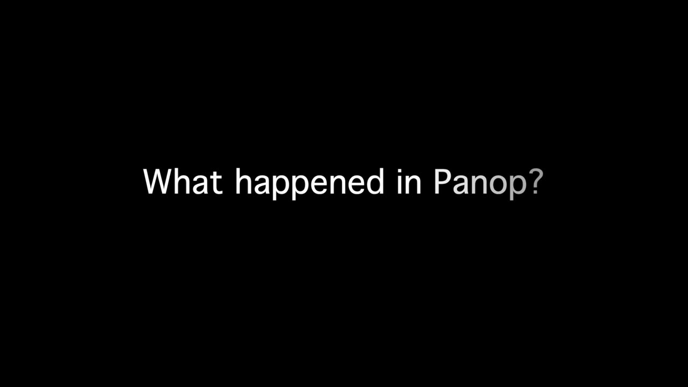

Silent Music - What happened in Panop?
PROJECT DESCRIPTION
This interdisciplinary project is a musical mime performance that utilizes the mime’s movements to generate sounds in real-time. For this purpose, the performers wear gloves with embedded wireless motion sensors called MUGIC. The receiving data from the sensors generate real-time sounds through a MAX/MSP patch and creates the required music for the performance. Silent Music uses the mime’s body as a musical instrument and creates a particular relationship between musical events and gestures.
PROGRAM NOTES
What happened in Panop?
Panopticon is a type of architecture and a system of control that is designed to observe and punish prisoners. In a panopticon prison, the inmates never know when they are being watched. With a certain observation technique, the prisoners are forced to act like they are always being watched. The video that you are about to hear and see is a scene from my upcoming movie, Silent Music/Musical Mime. This scene along with six others depicts an original story describing the life of a censored artist who is writing a piece about a prison called Panop. Silent Music is a multidisciplinary performance integrating mime, music, and motion sensor technologies. This project is based on the concept of censorship, silence, and silencing. For this scene, I wear hand-worn MUGIC motion sensors. MUGIC tracks the movements of my hand and generates data; the resulting data produces the required music in real-time.
PERFORMANCE REQUIREMENTS
- One SoundCard with 2 inputs and 2 outputs, 2 Speakers to have stereo sound. one head-worn wireless microphone, one projector (optional), one table, one piano bench.
- space: The work is suitable for any venue including traditional concert stage, theater stage, gallery, club, public spaces, university environment or other venue.
- performer(s): One performer. Adib Ghorbani
- feasibility: Clowny Sky, an electro-musical mime, Winifred Smith Hall, UCI, US, 2019. Musical Skits for Pianist and Electronisist -- Premiered and staged multiple nights by Teeth and Metals, SLSA Conference, UCI, 2019.
MEDIA

▶